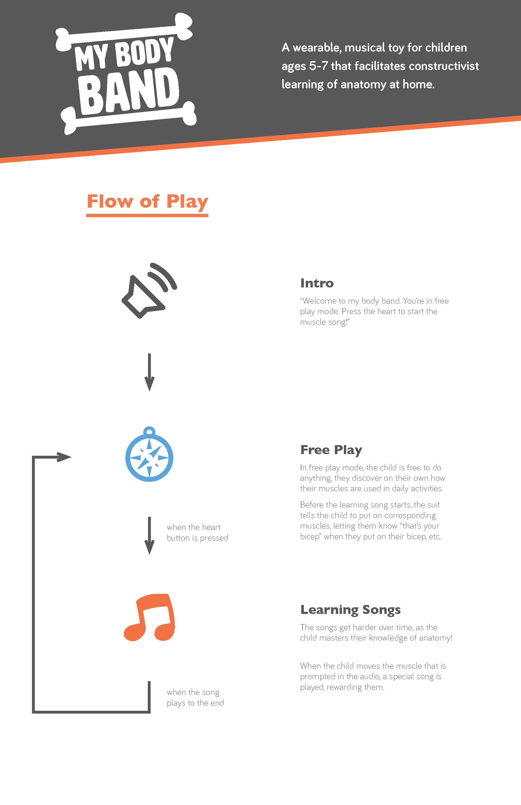

Ryan is a designer.
He can build
my body band
product design, experience design, education design
How could you learn anatomy in a way that is not abstract, but instead applied to real life context (a.k.a. contructivist). What if it was playful, too?
In this partnered project with Erik Lack and Ben Basseches, we devised a suit that teaches children anatomy through a series of playful songs.

Our hypothesis was that by learning anatomy in context of the child's own body, the could learn the bones and muscles in the human body and how they work together easily. In our initial user testing, our brave six-year old child correctly guessed all the muscles after playing through the song a couple of times!

In free play mode, whenever a muscle is flexed, a corresponding beep is made. In song mode, the child is given a series of cues (e.g. "Flex your bicep!"), to allow for a deeper level of mastery. Over time, these songs get harder and harder.